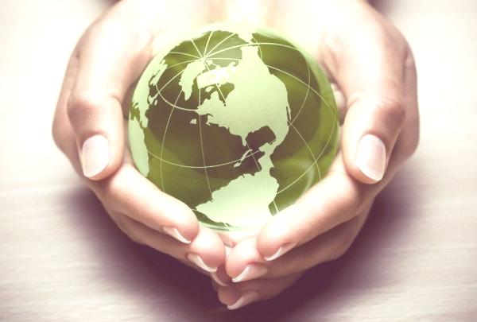
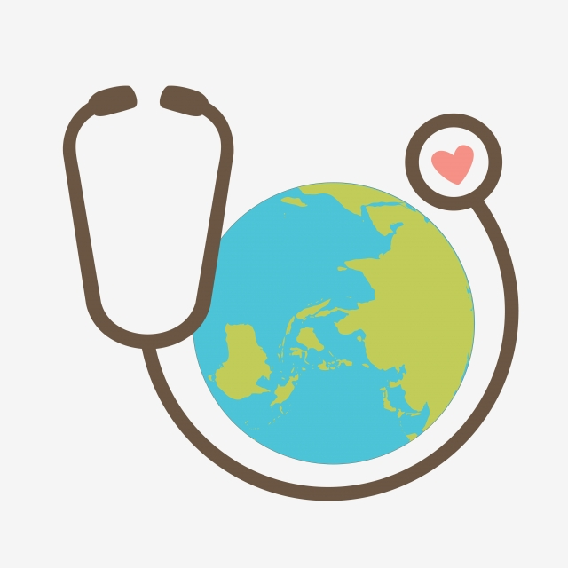
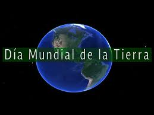
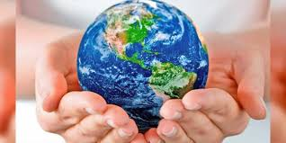

Día internacional de la madre tierra 22 de Abril
.jpg)

.jpg)
.jpg)
.jpg)
.jpg)
.jpg)
.jpg)
.jpg)
.jpg)
- 
Realizado por:
Carina Martinez Nieto
4to semestre grupo "E"
Especialidad:
Programación
Submódulo
Desarrolla aplicaciones móviles
Docente:
Lic. José Antonio Gómez Hernández
Mas sobre el dia
.jpg)
4to semestre grupo "E"
Programación
Desarrolla aplicaciones móviles
Lic. José Antonio Gómez Hernández
"Madre Tierra" es una expresión común utilizada para referirse al planeta Tierra en diversos países y regiones, lo que demuestra la interdependencia existente entre los seres humanos, las demás especies vivas y el planeta que todos habitamos.
.jpg)
La Tierra y sus ecosistemas son nuestro hogar. Para alcanzar un justo equilibrio entre las necesidades económicas, sociales y ambientales de las generaciones presentes y futuras, es necesario promover la armonía con la naturaleza y el planeta.
.jpg)
Celebramos el Día Internacional de la Madre Tierra para recordar que el planeta y sus ecosistemas nos dan la vida y el sustento. Con este día, asumimos, además, la responsabilidad colectiva, como nos recordaba la Declaración de Río de 1992, de fomentar esta armonía con la naturaleza y la Madre Tierra.
Este día nos brinda también la oportunidad de concienciar a todos los habitantes del planeta acerca de los problemas que afectan a la Tierra y a las diferentes formas de vida que en él se desarrollan.
"A medida que nos industrializamos, nuestras cadenas de abastecimiento se van haciendo menos transparentes, por lo que las consecuencias de nuestras acciones sobre el medio ambiente son más difíciles de entender” señaló.
La plataforma del Día de la Tierra quiere que este día no se celebre solo durante una joranda, si no que el compromiso se extienda todo el año. “Poética y moralmente, plantar un árbol requiere atención durante mucho tiempo, no se trata solo de plantarlo en el suelo” dijo Rogers.
Para ayudar a hacer la transición hacia un mundo bajo en carbono, la organización colabora con cien mil escuelas de todo el mundo y forma parte de proyectos ambientales durante todo el año.
Cassara dijo que su organización emplea el Día de la Tierra para tratar de involucrar a los líderes políticos en el movimiento ecologista.
.jpg)
"El Día de la Tierra no crea conciencia entre el público de la misma manera que solía hacerlo. Pero todavía proporciona un punto de referencia para la reflexión entre aquellos que nos encontramos dentro de la comunidad del medio ambiente", dijo.
.jpg)
Rogers anima a establecer un compromiso público para realizar una acción relacionada con el medio ambiente a todos aquellas personas implicadas con el medio ambiente el próximo 22 de abril.
.jpg)
Comprometerse con las ideas promovidas desde la plataforma Día de la Tierra supone educar a los amigos y familiares sobre el calentamiento global o comprar productos ecológicos como bombillas de bajo consumo.

El compromiso es la máxima de la iniciativa que se prolonga durante todo el año, "La Generación Verde", que nos ha llevado a una nueva convocatoria del Día de la Tierra en 2018.
.jpg)
«Madre Tierra» es una expresión común utilizada para referirse al Planeta Tierra en diversos países y regiones, lo que demuestra la interdependencia existente entre los seres humanos, las demás especies vivas y el planeta que todos habitamos.
La Tierra y sus ecosistemas son nuestro hogar. Para alcanzar un justo equilibrio entre las necesidades económicas, sociales y ambientales de las generaciones presentes y futuras, es necesario promover la armonía con la naturaleza y el planeta.
.jpg)
Celebramos el Día Internacional de la Madre Tierra para recordar que el planeta y sus ecosistemas nos dan la vida y el sustento. Con este día, asumimos, además, la responsabilidad colectiva, como nos recordaba la Declaración de Río de 1992, de fomentar esta armonía con la naturaleza y la Madre Tierra.
.jpg)
Este día nos brinda también la oportunidad de concienciar a todos los habitantes del planeta acerca de los problemas que afectan a la Tierra y a las diferentes formas de vida que en él se desarrollan.
El 23 de abril de 2018 se realizó en la sede de las Naciones Unidas en Nueva York, el 8° Diálogo Interactivo sobre Armonía con la Naturaleza, en ocasión de la conmemoración del Día Internacional de la Madre Tierra.
El evento fue convenido por el Presidente de la Asamblea General, Miroslav Lajcak, quien destacó la importancia del Diálogo para intercambiar ideas sobre desarrollo y patrones de producción y consumo sostenibles en armonía con la naturaleza.
Durante la jornada, se discutió sobre cómo los marcos legales y económicos de la Jurisprudencia de la Tierra impactan la implementación de patrones de producción y consumo sostenibles en Armonía con la Naturaleza.
El Diálogo se realizó con el objetivo de inspirar a los ciudadanos y las sociedades a reconsiderar la relación que mantienen con la naturaleza, acorde a la meta 12.8 de los Objetivos de Desarrollo Sostenible con respecto a los patrones de consumo y producción sostenibles.
Mejorar la base ética de la relación entre la especie humana y la Tierra en el contexto del desarrollo sostenible no es solo beneficioso, sino también necesario.
El paquete de medidas estratégicas diseñado por el quinteto de organizaciones ecologistas está compuesto por 17 demandas que abarcan medidas transversales que trascienden el medioambiente y van más allá con el fin de facilitar la transformación de todo el sistema.
En concreto, tal y como anunciaron los responsables de estas ONG durante la presentación de Un programa por la Tierra. Demandas para una legislatura sostenible, lo que defienden con estas 17 propuestas es lograr que la «sostenibilidad del modelo económico, las políticas centradas en la justicia social y ambiental y las medidas para generar un nuevo modelo de producción y consumo, con generación de empleo ligado al cuidado y mejora ambiental» marquen el camino en la nueva etapa política.
.jpg)